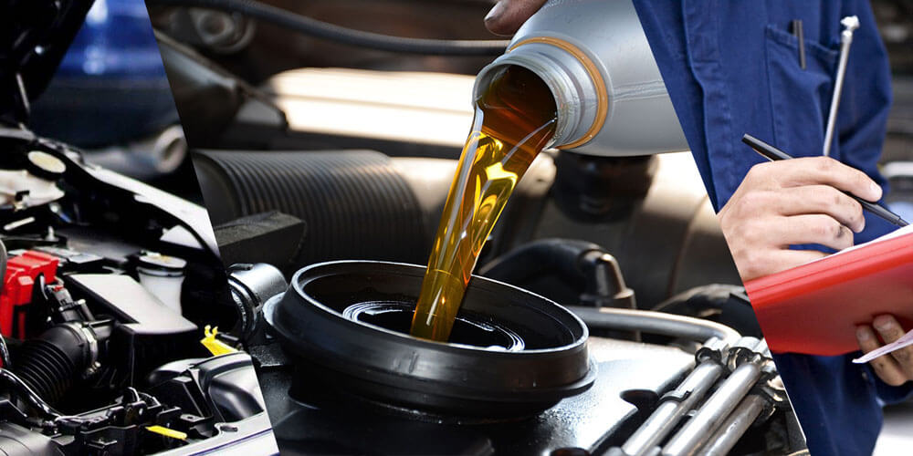
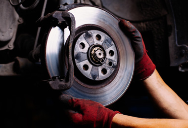
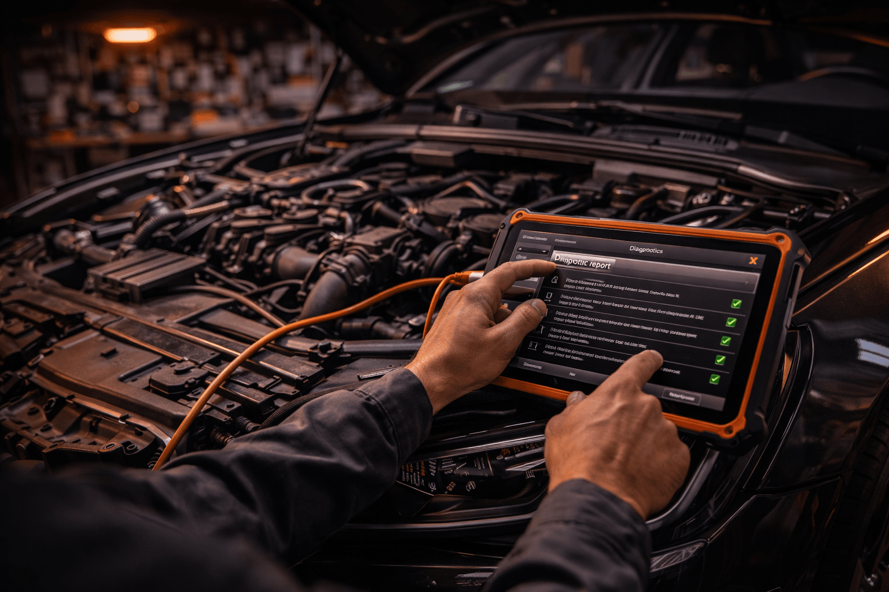
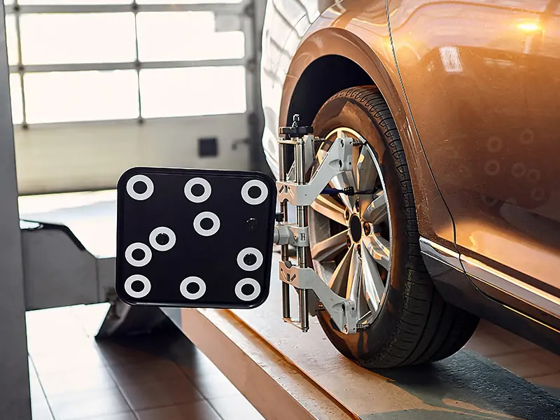
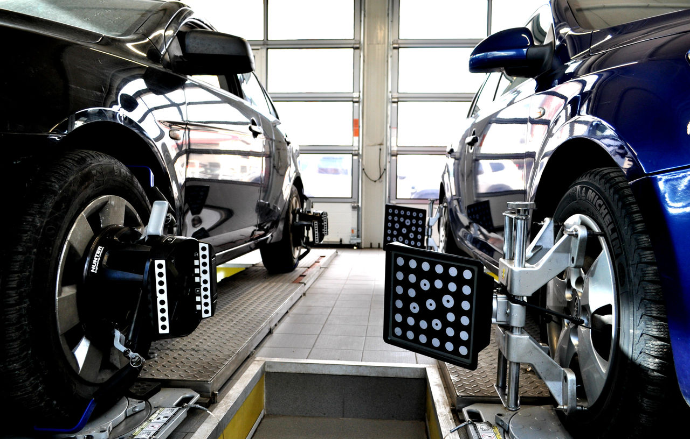
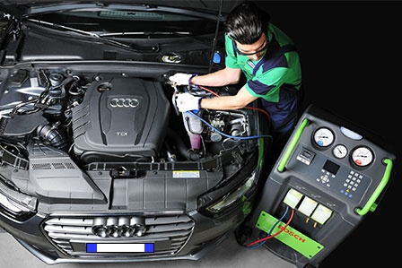
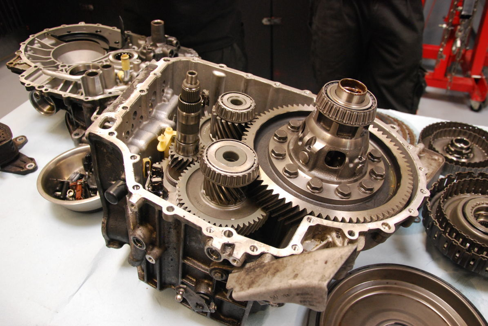
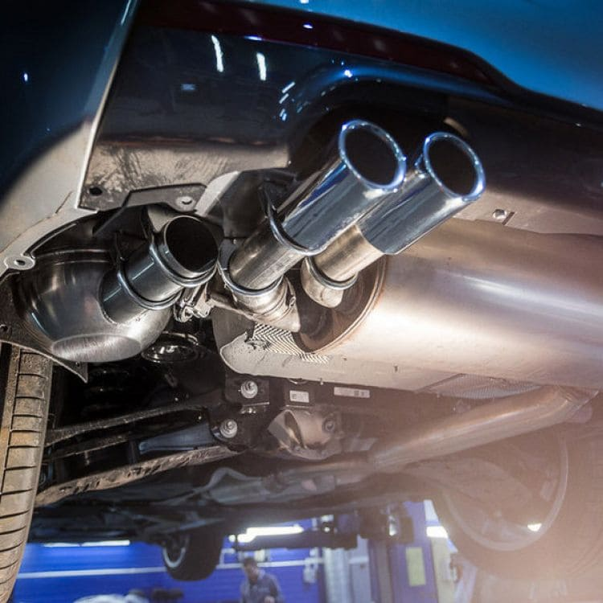
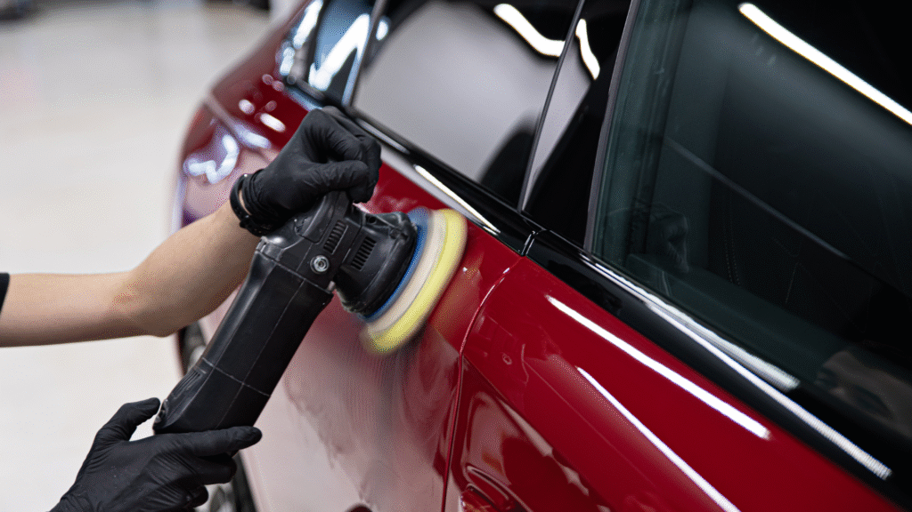
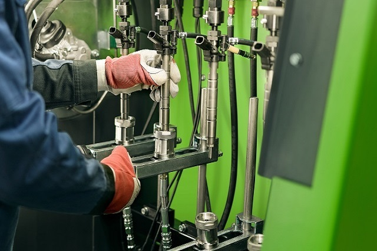

Servicii Auto Complete
Avem soluții pentru absolut orice defecțiune. Apăsați pe orice casetă pentru detalii complete și fișă tehnică.

1. Revizii Periodice
Vezi detalii tehnice

2. Sistem Frânare
Vezi detalii tehnice

3. Diagnoză Computerizată
Vezi detalii tehnice

4. Suspensie & Direcție
Vezi detalii tehnice

5. Geometrie Roți 3D
Vezi detalii tehnice

6. Climatizare A/C
Vezi detalii tehnice

7. Reparații Motoare
Vezi detalii tehnice

8. Sistem Evacuare
Vezi detalii tehnice

9. Vopsitorie Premium
Vezi detalii tehnice

10. Diagnostic Sisteme Injecție
Vezi detalii tehnice
Întrebări Frecvente & Detalii Tehnice
O revizie standard de filtre și ulei durează maxim 60 de minute. Toate piesele sunt comandate în avans pentru a reduce timpul tău de așteptare.
Alegerea aparține în totalitate clientului. Oferim ambele variante, lucrând exclusiv cu distribuitori oficiali acreditați și oferind factură și garanție.
Mărci Auto Asigurate în Service
Grupul VAG (VW, Audi, Skoda)
BMW & Mini
Mercedes-Benz
Ford & Opel
Dacia & Renault